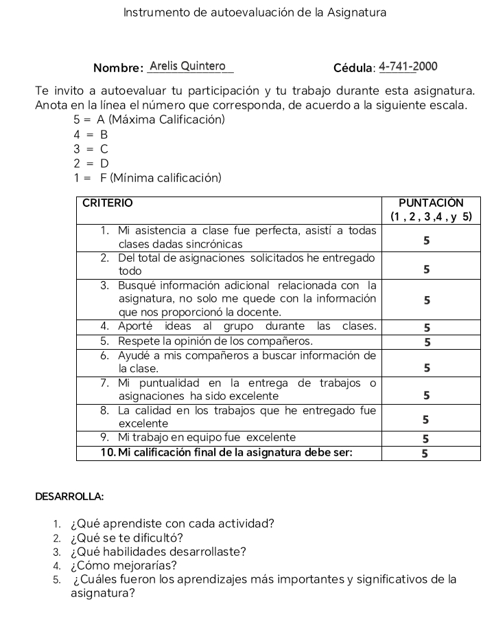

JESPER JUUl

"Los Niños no son cosas que moldear, si no personas que descubrir."
INTRODUCCIÓN
El presente portafolio tiene como propósito recopilar y presentar de
manera organizada los principales contenidos, conceptos y aprendizajes
adquiridos durante el estudio de esta área.
A través de diferentes actividades, análisis y reflexiones, se busca evidenciar la importancia de reconocer las características propias de cada etapa del desarrollo, así como la influencia del entorno familiar, educativo y social en la formación del individuo.
A través de diferentes actividades, análisis y reflexiones, se busca evidenciar la importancia de reconocer las características propias de cada etapa del desarrollo, así como la influencia del entorno familiar, educativo y social en la formación del individuo.
ÍNDICE
- INTRODUCCIÓN
- GLOSARIO
- PPTS PRESENTADOS EN CLASE
- VIDEOS PRESENTADOS
- GUÍA DE LA ASIGNATURA
- ACTIVIDADES O ASIGNACIONES
- RECOMENDACIONES
- CONCLUSIONES
- ANEXOS
- AUTOEVALUACIÓN
- BIBLIOGRAFÍA
GLOSARIO
- Adolescencia: Etapa del desarrollo que ocurre entre la niñez y la adultez, caracterizada por cambios físicos, emocionales y sociales.
- Apego: Vínculo emocional que se forma entre el niño y sus cuidadores principales, fundamental para su desarrollo activo.
- Autoestima: Valoración que una persona tiene de sí misma, influenciada por experiencias personales y sociales.
- Cognición: Conjunto de procesos mentales como el pensamiento, la memoria, la atención y el aprendizaje.
- Conducta: Forma en que una persona actúa o responde entre diferentes situaciones.
- Desarrollo Emocional: Proceso mediante el cual el niño aprende a reconocer, expresar y manejar sus emociones.
- Desarrollo Social: Capacidad del individuo para interactuar y relacionarse con otras personas de manera adecuada.
- Empatía: Habilidad de Comprender y compartir los sentimientos de otras personas.
- Estímulo: Cualquier factor externo o interno que provoca una reacción o respuesta en el individuo.
- Inteligencia Múltiple: Teoría propuesta por Howard Gardner que plantea que existen diferentes tipos de inteligencia en cada persona.


ACTIVIDADES O ASIGNACIONES
Mapa Mental

Actividad del Reloj
Cada número, una historia para compartir
Presiona el botón para iniciar el juego.
RECOMENDACIONES
- Continuar fortaleciendo los conocimientos sobre los trastornos psicológicos presentes en la niñez y la adolescencia.
- Mantener una actualización constante sobre los criterios diagnósticos y enfoques terapéuticos utilizados en psicopatología infantil y juvenil.
- Promover la observación, empatía y análisis crítico durante la evaluación de casos clínicos.
- Considerar siempre el contexto familiar, social y educativo en el desarrollo emocional y conductual del menor.
- Fomentar la detección e intervención temprana para prevenir complicaciones en la salud mental de niños y adolescentes.
CONCLUSIONES
- Se logró integrar los conocimientos teóricos y prácticos adquiridos durante el proceso de formación.
- El desarrollo de las actividades permitió fortalecer habilidades de análisis, reflexión y resolución de problemas.
- La elaboración del portafolio facilitó la organización y sistematización de las experiencias y aprendizajes obtenidos.
- Se evidenció el progreso alcanzado en el desarrollo de competencias relacionadas con el área de estudio.
- El proceso contribuyó al fortalecimiento de la responsabilidad, la disciplina y el compromiso con el aprendizaje.
- La recopilación de evidencias permitió valorar los logros obtenidos e identificar oportunidades de mejora.
- Los conocimientos adquiridos constituyen una base sólida para el desempeño académico y profesional futuro.
- La experiencia obtenida durante la elaboración del portafolio favoreció el crecimiento personal y profesional, promoviendo una actitud de aprendizaje continuo.
ANEXOS
Investigación sobre Raíces y Evolución del DSM
Descargar PDFCI-11 Versión En Español
Descargar PDFDSM-5-TR Versión En Español
Descargar PDFLIBRO - EL EXTRAÑO CASO DEL DR. JEKYLL Y MR. HYDE
Descargar PDFLIBRO - UN ATAQUE DE LUCIDEZ
Descargar PDF
{kind=link}
{kind=link}
{kind=link}
{kind=link}
AUTOEVALUACIÓN

BIBLIOGRAFÍA
- American Psychiatric Association. (2013). Diagnostic and statistical manual of mental disorders (5th ed.). Arlington, VA: American Psychiatric Publishing.
- Barlow, D. H., & Durand, V. M. (2015). Abnormal psychology: An integrative approach (7th ed.). Belmont, CA: Cengage Learning.
- Comer, R. J. (2016). Abnormal psychology (9th ed.). New York, NY: Worth Publishers.
- Hockenbury, D. H., & Hockenbury, S. E. (2018). Abnormal psychology (8th ed.). New York, NY: W.W. Norton & Company.
- Nolen-Hoeksema, S., & Watkins, E. R. (2011). A heuristic for developing transdiagnostic models of psychopathology: Explaining multifinality and divergent trajectories. Perspectives on Psychological Science, 6(6), 589-609.